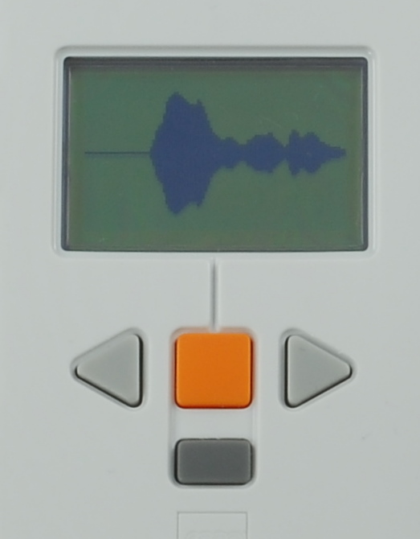

Fun Projects for your LEGO® MINDSTORMS® NXT!
|
|
Fun Projects for your LEGO® MINDSTORMS® NXT! |
| Sound Meter |
|

1
| Make a handle for the NXT Sound Sensor however you want. Here is one example. |
2
| Using the longest wire, connect the Sound Sensor to port 2 on the NXT. |
| Sound
Meter Programming Use the program Sound Meter for the Sound Meter. |
|
 |
| Challenge There are other interesting ways to graph the output of the Sound Sensor. Try modifying the Sound Meter program to draw the graph in a different way, or do something else with the loudness numbers. |
|
Copyright
©
2007-2009 by Dave Parker. All rights reserved. |